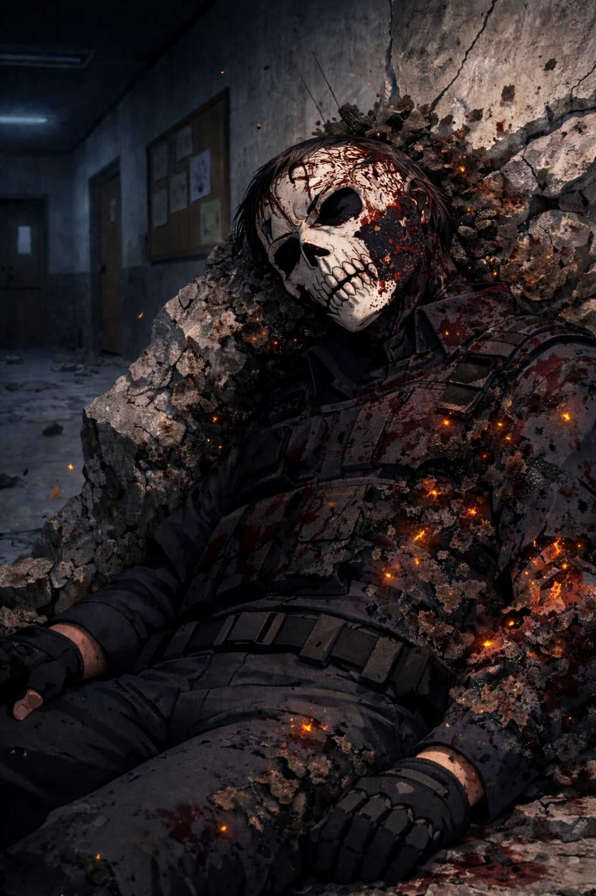

Les sujets 07-A et 07-B ont été identifiés dès leur plus jeune âge comme présentant une anomalie énergétique rare.
Leur proximité génétique et comportementale a révélé une synchronisation altérique spontanée dépassant les projections théoriques des unités de recherche.
Objectif : comprendre, isoler et reproduire cette résonance dans un cadre contrôlé.
Les sujets présentent une amplification mutuelle lors d’activation simultanée.
Les séparations prolongées provoquent des instabilités énergétiques non mesurables par les standards actuels.
Le lien observé dépasse une simple proximité biologique.
Objectif : Tester la réaction du sujet 07-A face à une situation de stress critique impliquant 07-B.
Résultat : activation incontrôlée. Désintégration partielle de l’infrastructure interne.
Plusieurs membres neutralisés. Niveau de destruction supérieur aux simulations.
Date : 19/03/2120
Suite à l’incident expérimental, les sujets 07-A et 07-B ont pris la fuite durant une panne partielle des systèmes.
Plusieurs agents retrouvés neutralisés dans le secteur métallique.
Les enregistrements montrent une silhouette observant la scène depuis le toit de l’établissement.
Image d’un agent de sécurité retrouvé sans signe vital suite à l’évasion des sujets 07-A et 07-B.
Impact crânien confirmé. Traces d’altération moléculaire détectées sur le membre supérieur droit.
Cause officielle : activation non contrôlée.
Statut : Fuite confirmée.
Priorité absolue : récupération des sujets.